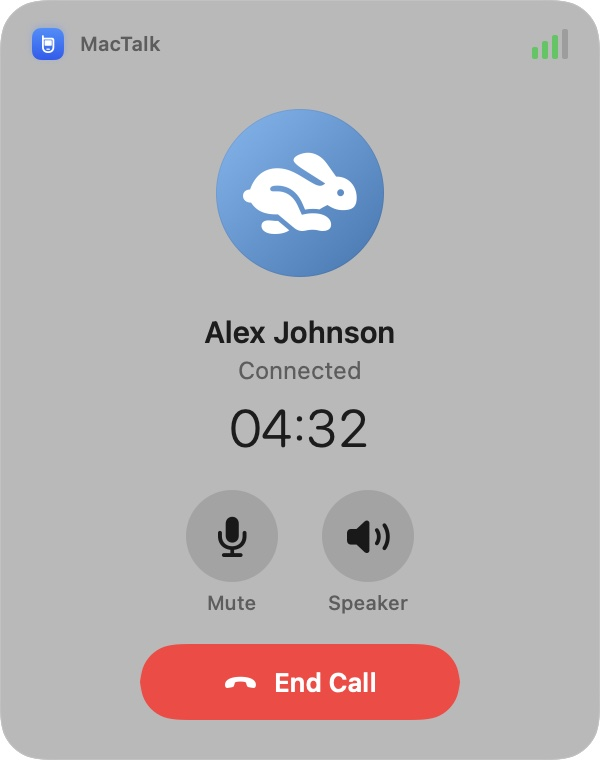

A small floating call window
Once a call connects, a 300 by 380 point window floats above other apps: who you're talking to, the connection quality, a timer, Mute, Speaker and End Call.


Screens are rendered from the app's own SwiftUI views with sample people and data. Built with Swift 6, SwiftUI and AppKit, WebRTC audio and a Supabase backend (Auth, Postgres with Row Level Security, Realtime). Source on GitHub ↗.